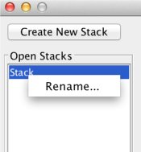
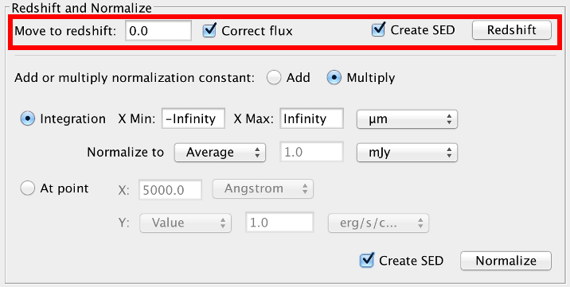

Spectral energy distributions, or SEDs, are commonly used in astronomy to study the physics of various astronomical objects. In some situations, it is useful to study the average shape of an SED. Astronomers will often combine SEDs of similar objects to create templates or study their general characteristics. Spectra, which may be thought of as densely-packed SEDs, may also be averaged to increase signal-to-noise ratio and examine common features of a specific group of objects.
This thread demonstrates how users may redshift, normalize, and statistically combine groups of SEDs with Iris’ tool SED Stacker.
Last Update: 07 May 2015 - First issue. Added in Iris 2.1 beta.
The SED Stacker component is a GUI interface between Iris and the Python toolkit sedstacker (available on Github.
sedstacker was developed for interest in creating SED template models, increasing the signal-to-noise ratio of faint spectra, and studying the average SED characteristics of specific groups of astronomical objects. The SED Stacker component in Iris allows users to group SEDs together and statistically combine or “stack” them into a single SED.
SED Stacker also provides a variety of ways to normalize their SEDs, and lets users redshift SEDs in bulk.
We use two datasets to explore SED Stacker’s capabilities: one set is several “featureless” AGN from Kirkpatrick et al. (2012; 2012ApJ…759..139K), and the other are several obscured and unobscured AGN from the COSMOS field used in Bongiorno et al. (2012; 2012MNRAS.427.3103B). You can download the featureless AGN and COSMOS AGN to follow along.
The user opens the Iris SEDStacker component by clicking either the desktop icon or Tools -> Science -> SEDStacker in the Iris toolbar. Clicking either item initiates the SED Stacker window and creates a new empty SED container, called a Stack, with the ID “Stack.”
Figure 1 shows the GUI frame for SED Stacker in Iris. On the left is a list of open Stacks. A user can create a new Stack by clicking “Create New Stack.” The user can change the name of the Stack by right-clicking the Stack name in the “Open Stacks” list. Like the SED Builder, Stacks have unique names. Stacks initialized with the same name are appended with “A, B, C,…” and so on (e.g., “Stack,” “Stack.A”, “Stack.B,” etc.).
Figure 1. The SED Stacker component.
| [Back to top] |
The user adds multiple SEDs from the list of open SEDs in the SED Builder by clicking the “Add…” button in the “Added SEDs” section. This opens up a window displaying all the open SEDs’ IDs and redshifts. If the user has already shifted a SED in Iris, the redshift will appear by the SED ID in the “Redshift” column. The user can input the redshift in this column by double-clicking it and entering the value. When finished with adding redshifts, the user selects the SEDs they wish to add by holding the Shift or Command / Control key on their keyboard, and clicking on the SED IDs. Highlighted rows are added to the Stack through the “Add” button.
The user does not need to assign redshifts to all the SEDs in a Stack. When a Stack is redshifted, SEDs without a redshift are simply passed along with no changes.
Figure 2. Adding SEDs and their redshifts to a Stack using the “Adding SEDs” window.
The list of SEDs in the Stack is displayed in a table under “Added SEDs.” The table shows the IDs, the original redshifts, the normalization constants (default, 1.0), and the number of points in each SED.
Figure 3. The SED Stacker frame after populating a Stack with SEDs.
The user may choose to import the Segments of a SED as individual SEDs in the Stack. In this case, the user checks “Treat Segments as SEDs” on the Add SEDs window before adding the highlighted SEDs to the Stack. The user then adds the redshift values for the segments by typing the redshift into the corresponding cell in the Redshift column.
Figure 4. Top: Adding SED segments as individual SEDs to a Stack. Notice that “Treat Segments as SEDs” is checked. Bottom: Assigning redshifts to the SED Segments in the Added SEDs table.
| [Back to top] |
Any number of Stacks can be added to SED Stacker. Stacks can be renamed by right-clicking on the Stack name in the Open Stacks, selecting “Rename…” and inputting the new, unique ID.
 Figure 5. Changing the name of a Stack.
The user can remove SEDs from a Stack by clicking on the SED rows in the table while holding Command/Control or Shift, then clicking the “Remove” button.
At any time, the user may visualize the current state of their Stack by clicking “Create SED” in the bottom-right corner of the window. This creates a SED-representation of their currently selected Stack which can be seen in the SED Builder and SED Viewer. There are also convenient check-boxes next to each operational button that let the user create a SED each time they redshift or normalize.
Figure 6. A SED-represntation of the Stack is added to the SED Builder and Viewer for more analysis using the “Create SED” button in the SED Stacker window.
Users can restore the SEDs back to their original values by clicking “Reset” in the bottom-right corner. This resets all redshifting and normalizations done to the Stack.
Stacks can be removed from the session by clicking the “Delete” button in the bottom-right corner. Iris will ask for the user’s confirmation before deleting a Stack.
| [Back to top] |
Before combining the SEDs together, the user can optionally redshift or normalize the SEDs using the methods provided in SED Stacker.
 Figure 7. Redshift options.
The user can shift multiple SEDs simultaneously to the same redshift. The user types in the target redshift into the “Move to redshift:” field. The SEDs are converted into wavelength-space before redshifting. The user can also choose if they want to correct the flux for the change in brightness due to the source’s observed redshift. This correction is done using the same method as used in the Shift, Interpolate, & Integrate Tool:
The integral of the original SED is recorded. Then, the spectral values are shifted to the target redshift, and the integral of the shifted SED is computed. Finally, the flux is multiplied by the ratio of the shifted and original integrals.
By default, this option is checked.
Figure 8. Shifting the Featureless AGN to z=0.0. We correct the flux and automatically create a SED-representation of the shifted Stack. The redshifted AGN are shown in the SED Builder and Viewer.
SEDs that do not have assigned redshifts are not shifted. These SEDs are kept in the stack with the shifted SEDs. A message with the unshifted SED IDs is presented to the user in this case.
Users can change the redshift of the SEDs after having added them to a Stack. Double-click the “Redshift” cell value in the “Added SEDs” table to change the redshift [1].
If “Create SED” is selected, a new SED named “<stack_name>_z=<redshift>_” will be added to the Builder and Viewer for visualization, where <redshift> is the value the Stack was shifted by.
Note: The redshifts in the “Added SEDs” table always show the original redshifts.
[1] Changing the original redshift does NOT automatically reset the SED to its original state. If the redshift is changed after a user has already shifted the SED, and the user wants to redshift the SED again, the user MUST reset the Stack first.
| [Back to top] |
Users can normalize the SEDs in the stack with one of two methods: by setting the integrated flux of each SED to a certain value, or by setting the flux of each SED at some spectral value to a flux value. These two methods are called Integration and At Point.
Figure 9. Normalization options.
The Integration method requires the spectral range to integrate over (by default, the minimum and maximum spectral values of each SED), and the value to set the integrated flux to (default 1.0 erg/s/cm2). The user controls the units they wish to use for integration with the X and Y drop-down boxes. By default, the SEDs are normalized by setting the integral to whatever value is in the “Normalize to:” text box. This option is called “Value.” The user may also choose to normalize the SEDs so that the integrated flux of each SED is equivalent to the median or average integrated flux of all the SEDs by selecting the corresponding item in the drop-down list. The integrals are calculated using the trapezoidal rule.
Figure 10. Featureless AGN normalized to the median integral of all the SEDs plotted in mJy vs microns. The normalization constants are the values multiplied to the SEDs in the flux unit used for normalization, which in this case is mJy.
For the At Point method, the user provides the spectral value at which to normalize the SEDs (by default, 5000 Angstroms), and the value of the flux at that spectral value (default 1.0 erg/s/cm2/Angstrom). Again, the user may choose to normalize the SEDs so that the flux at the spectral value is equal to the average or median of all selected SEDs at the spectral value by selecting the corresponding item in the drop-down box next to “At point:”. The SEDs are interpolated via a nearest-neighbor method to calculate the normalization constant at point (X, Y).
Figure 11. Featureless AGN normalized to the point (100 microns, 10 mJy). The normalization constants are the values multiplied to the SEDs in the flux unit used for normalization, which in this case is mJy. Note that the Stack was reset and re-shifted since the last normalization.
Both normalization methods allow the user to either add or multiply the normalization constant to the SEDs. By default, multiplication is used. The user controls this behavior with the “Add” and “Multiply” buttons above the normalization parameters. In the examples above, we used “Multiply,” so the normalization constants listed in the table are multiplied by the redshifted SED fluxes.
If “Create SED” is selected, a new SED named “<stack_name>_normalized” will be added to the Builder and Viewer for visualization.
If the spectral range of a SED falls outside the defined normalization range, the SED will not be normalized. A message with the list of SEDs that weren’t normalized will pop-up if this happens.
SED Stacker allows users to re-normalize their SEDs. Users can normalize their SEDs with one set of parameters, then renormalize with a new set. Changing the parameters does NOT undo the previous normalization.
The normalization constant applied to each SED is shown in the column “Normalization Constant”. Useful tip: The normalization constant only updates when the SED is normalized with new parameters. For example, a user may normalize a Stack, add a few more SEDs to the stack, and renormalize the Stack with the same parameters to update the newly added SEDs. The SEDs and normalization constants of the older SEDs remain the same, unless the user selected an average or median for normalization.
| [Back to top] |
On the right side of the SEDStacker GUI are the stacking options.
Figure 12. Stacking options.
This is how SED Stacker statistically combines, or “stacks,” SEDs. A set of equally-spaced bins are created using the user-input bin size. The binning runs from the minimum to the maximum spectral values of the SEDs; the min value is rounded-down, and the max value is rounded up. All of the SED points that fall within a bin are combined according to the the chosen statistic into one data point, set at the left-edge of the bin. The statistic options are average, weighted average, and sum. The distribution of data points are assumed to be Gaussian, and so the errors of each combined bin are the standard deviation of the flux values in each bin.
In SED Stacker, the user selects the combination statistic from the list. The options again are Average, Weighted Avg (Average) [2], and Sum. The user also chooses which units she would like to stack in from the Y Axis and Bin Size Units drop-down lists (default: [erg/s/cm2/Angstrom] vs [Angstrom]).
The Bin Size may be linear or logarithmic. This behavior is controlled with the “Logarithmic binning” checkbox. By default, the binning is logarithmic, meaning that the input bin size is in log-space as well. For example, a bin size of 1.0 would be a decade, and a bin size of 0.2 is one-fifth of a decade. To turn on linear binning, uncheck the logarithmic binning box. Be sure to select an appropriate bin size and bin unit when using linear binning. We suggest using logarithmic binning when a SED spans 3 decades or more.
The user may optionally smooth out the stacked SED with a boxcar method by checking “Smooth” and selecting the boxcar width (always linear; same units as the Bin Size Units). The smoothing is done after the SEDs are stacked. To smooth the stacked SED, we use
numpy.convolve(spectral_values, window_array, window='same'), where\
window_array = numpy.ones(int(smooth_boxsize) / float(smooth_boxsize)).
Clicking “Stack!” combines the SEDs together based on the stacking parameters into a single SED. The stacked SED is added to the SED Builder and SED Viewer. Unlike redshifting and normalizing, SEDs can be stacked any number of times with different sets of stacking parameters without affecting the SEDs.
Figure 13. The averaged SED of the rest-frame, normalized (by integration) featureless AGN using logarithmic binning with bin sizes of 0.1 decades, combined in mJy vs microns.
[2] NOTE: If weighted average is chosen, and there are points without errors associated with it, an average will be taken instead. This is because we don’t want the statistics to be muddled; for example, if there are 6 points in a bin, but only 5 have associated uncertainties, combining the errors wouldn’t make sense without making some assumptions or removing the points without associated uncertainties. Instead, we suggest that the user remove the points without uncertainties using the Metadata Browser in the SED Viewer first if they want to use weighted average.
| [Back to top] |
Here is a list of useful tips and tricks to using SED Stacker to its fullest potential.
When adding SEDs to a Stack, the user has the option to treat the Segments within a SED as individual SEDs by checking the appropriate box of the same name in the Add SEDs frame. This allows the user to stack the SED segments together, rather than flattening the segments to one SED (the default behavior of SED Stacker).
Say the user creates a Stack, and redshifts and normalizes its SEDs. They create a SED of the Stack to visualize in the SED Viewer. After looking at the data, they want to filter out some of the data points from the SEDs with the Metadata Browser, and use the filtered SEDs for their Stack. The user can open the Add SEDs window, highlight their filtered SED-representation of their Stack, and check the “Treat Segments as SEDs” option. This adds the segments as individual SEDs. The user can then remove the old SEDs in the Stack.
| [Back to top] |
By default, the Iris redshifter in the Science Tools corrects the flux so that the energy (integral) of the original SED equals that of the shifted SED. If you do not want to make this correction, you may add the SED into a Stack, un-select “Correct flux,” select “Create SED,” and click “Redshift.”
Figure 14. Shifting a SED to rest-frame without correcting for the flux.
| [Back to top] |
If you want to normalize a single SED, you can add the SED into a Stack, and normalize by Integration or At Point to a value (you can’t normalize a single SED to the average or median of the Stack, since there’s only one SED!). Creating a SED after normalizing gives you the normalized SED in the SED Builder for further analysis with other Iris tools.
| [Back to top] |
Normalizing multiple SEDs is trickier than normalizing a single SED. If you want to normalize multiple SEDs, you can add the SED into a Stack, and normalize with any normalization parameter set. Select “Create SED” and normalize. In the SED Viewer, you can open the Metadata Browser and use the Boolean filter to select the points with the same target name (column b:), and Extract the highlighted points to a new SED.
Figure 15. Top: Normalizing the rest-frame COSMOS AGN to the average flux of the SEDs at 2.9 microns. Bottom: Then we can extract the individual SEDs out using the Metadata Broswer.
| [Back to top] |
If a SED doesn’t have a redshift associated with it, the SED is not redshifted, but is kept in the stack. An info message telling the user which SED was not shifted is shown.
The redshifts of my SEDs changed since the last time I opened the Add SEDs frame. Why?
Changing the redshifts through the Added SEDs table will change the redshift shown in the Add SEDs window. This behavior does NOT change the redshift values in other Stacks that have previously added that SED.
| [Back to top] |
The normalization values are changing in an unexpected way. Why?
For the time being, SED Stacker does not keep track of the old normalization constants, nor does it track the units in the Added SEDs table. Users will have to write down the normalization constants and associated units if they’re interested in them.
If you have already normalized a Stack, changing the parameters and normalizing again does NOT undo the previous normalization! Internally, the SEDs added to a stack are changed each time the user clicks “Redshift” or “Normalize.” For example, if a user normalizes with one set of parameters, then normalizes again with a new set of parameters, the SEDs are normalized twice. The SEDs are renormalized on top of the first normalization. We implemented SED Stacker this way on purpose, so that users could renormalize their SEDs.
To reset the normalization parameters, click “Reset” in the bottom-right corner of the window. Note that “Reset” resets the whole Stack back to its original state, meaning that if any redshifting was done, the SEDs should be re-shifted.
If a SED falls outside the min-max range specified in the normalization parameters, that SED is not normalized. A warning is sent to the user saying which SED(s) have not been normalized.
| [Back to top] |
Too many bins (number of bins: (XXXXXX))
In Python, an array is created from the minimum to maximum spectral values in the Stack, with equally-spaced values of the input bin size. This error occurs when the array is over 500,000 bins long. This usually happens when a user tries to stack in linear space when the spectral values are large, and/or spanning many decades.
Here are two ways you can reconciling this error:
“Weighted Average” is giving same results as “Average”
If weighted average is chosen, and there are points without errors associated with it, an average will be taken instead. This is because we don’t want the statistics to be muddled; for example, if there are 6 points in a bin, but only 5 have associated uncertainties, combining the errors wouldn’t make sense without making some assumptions or removing the points without associated uncertainties. Instead, we suggest that the user remove the points without uncertainties using the Metadata Browser in the SED Viewer first if they want to use weighted average.
A stacking error has occurred. Please see the Iris documentation.
If you see this error, check that:
Otherwise, please contact us with your problem at the CXC HelpDesk.
| [Back to top] |